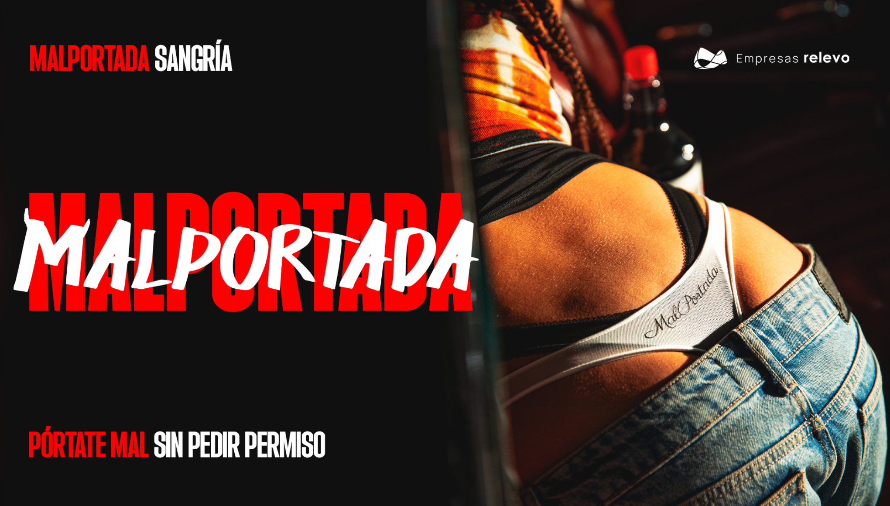
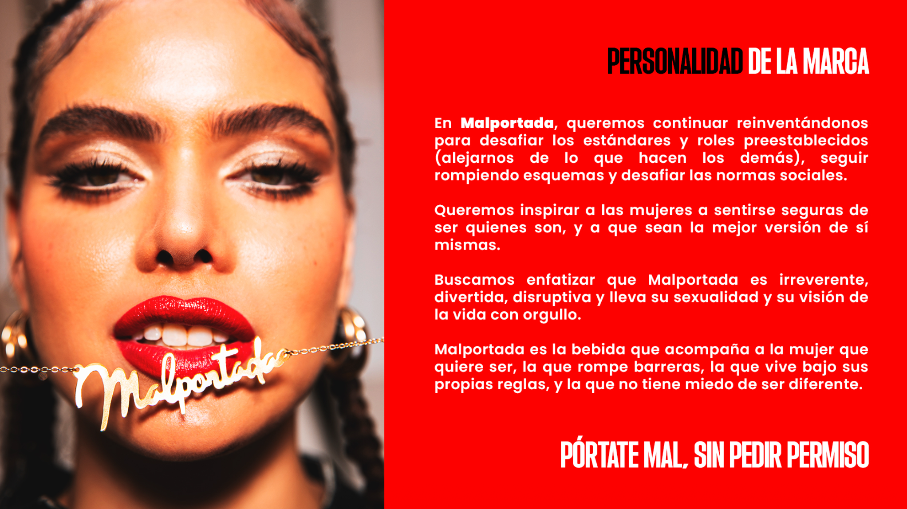
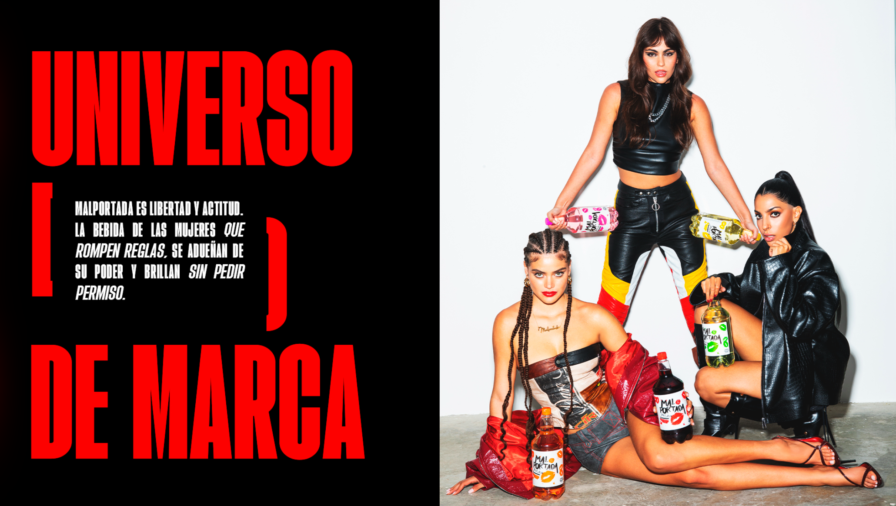
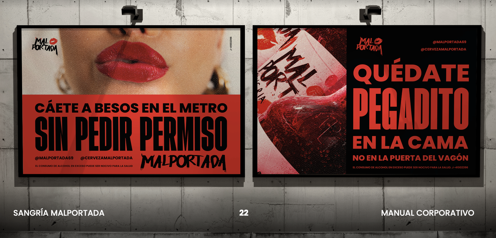
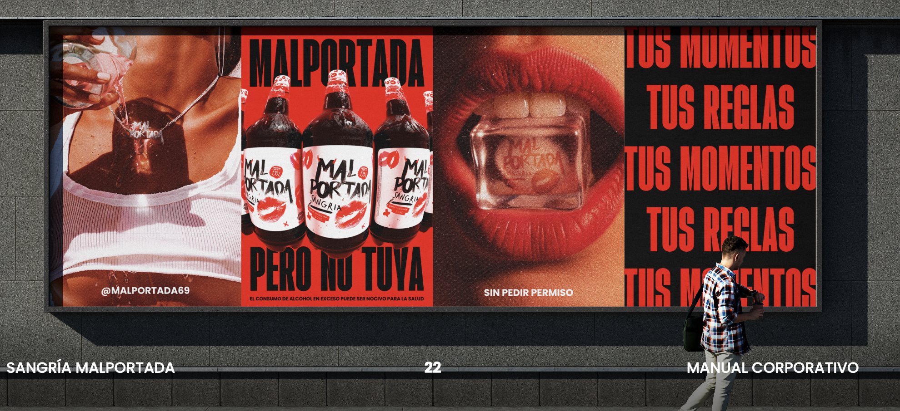
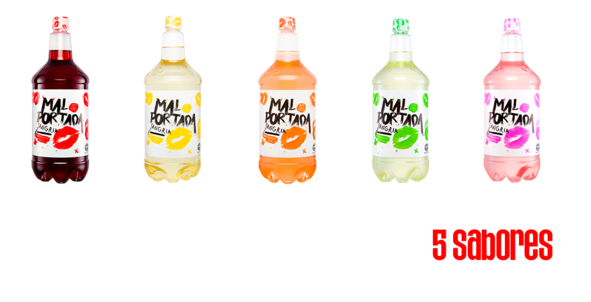

Sesiones de grupo con consumidoras de sangría en Panamá. Prueba de producto, lectura de marca y reacción a la línea de sabores y latas.
Comprender cómo la consumidora panameña de sangría recibe a Malportada. No solo la marca, también el líquido. No solo en góndola, también en uso. La pregunta de fondo: si la marca llega a Panamá tal como está hoy, ¿qué pasa? ¿Qué entra limpio, qué genera fricción y qué hay que ajustar antes de poner el producto en mesa?
El estudio cubre hábitos de consumo, prueba ciega frente a Clos y Peñasol, prueba develada con marca, lectura de concepto e identidad gráfica, evaluación de la línea de sabores en botella, reacción a las latas con y sin gas, y rango de precio percibido. Cierra con hallazgos, síntesis estratégica y FODA.
Las sesiones combinaron prueba de producto a ciegas, prueba develada con marca, lectura de concepto y de piezas visuales, y degustación de la línea de sabores y latas. Las dos primeras sesiones agruparon a consumidoras de NSE medio y medio bajo, las dos últimas a NSE medio y medio alto. La segmentación es relevante porque las opiniones divergen, sobre todo en envase y precio.
Cada sesión arrancó con una cata a ciegas de tres sangrías servidas sin marca: Clos, Peñasol y Malportada. Se evaluaron sabor, color, aroma, cuerpo, balance y dulzor antes de cualquier estímulo de marca.
Una vez identificadas las marcas, se exploró la reacción al envase, etiqueta, color del líquido en contexto y la coherencia entre la promesa visual y lo que se sintió en boca.
Se mostraron extractos del manual corporativo (universo de marca, personalidad, frases) y piezas tipo afiche exterior y feed de Instagram. Se midió identificación, claridad y resonancia.
Se presentó la línea de cinco sabores en botella plástica de 1 L (tinta original, maracuyá, melocotón, manzana verde y rosado) y, en los grupos en los que aplicó, las latas de sangría con gas.
Consumidoras frecuentes de sangría. Compran principalmente en supermercados de barrio y bodegas chinas. Conviven con marcas como Peñasol, Clos y Don Simón. La sangría aparece en casa, playa, parking, reuniones de chicas y eventos familiares.
Consumidoras que combinan compra en Riba Smith y Felipe Motta con consumo en restaurante. Toman sangría como acompañamiento de comida o reuniones, también vino y cócteles tipo margarita, mojito y Aperol. Mayor sensibilidad al envase y a la coherencia de marca.
La sangría no aparece sola. Aparece dentro de un repertorio que comparte con vino, mojito, margarita, Aperol, cerveza y las bebidas preparadas en lata. La sangría tiene un lugar muy específico en la vida de la consumidora panameña, y entender ese lugar explica buena parte del veredicto sobre Malportada.
Es la ocasión madre. La sangría hace clic con noche de chicas, conversación larga, ponerse al día, pijamada, cumpleaños y despedidas de soltera.
Antes de ir a la discoteca o a un evento, la sangría aparece como puente. Te activa, te pone "social", entras en ambiente sin perder el hilo de la conversación.
Acompaña carne roja, pasta, comida de mar. En restaurante es la primera opción cuando la oferta lo permite, sobre todo en los grupos altos.
Ocasión más recurrente en los grupos bajos. En playa pesa la practicidad del envase plástico y la cantidad. En parking, accesible y para compartir.
Domingo, Navidad, Año Nuevo. La sangría se asocia con la tradición de Carolina y Caroreña en consumidoras de origen venezolano, mayoritarias en el estudio.
"Cuando llego a mi casa que no puedo dormir". La sangría también funciona como ritual personal de relajo, a veces individual, casi terapéutico.
"La sangría tiene algo especial, te pone social. Es para compartir, algo casual, para conversar y no perder el hilo de la conversación."Sobre por qué eligen sangría
"Yo busco cosas dulces. Si voy a una boda, dije: espero que haya margarita o trago de los novios. No quiero algo que tengo que tragar."El lugar dulce en el repertorio
"Yo tomo sangría porque sufro migraña y la sangría no me produce migraña. El dulzor al día siguiente no me da nada."Razón funcional poco visible
"Esa sangría yo la buscaría en un momento en que quiero reunirme y no quiero tomar algo tan fuerte, pero igual quiero como que pegue."El balance buscado
La sangría comprada hecha rara vez se toma tal cual. Es un punto de partida que la consumidora interviene en casa según el momento. Esto es especialmente cierto en NSE medio bajo, pero también aparece en el medio alto.
Manzana, naranja en rodajas, fresa. Es la intervención más universal y la que reafirma el ritual de sangría.
Vodka, ron Abuelo, cualquier licor neutro o un Clos extra para cargarla cuando se siente baja de licor.
Sprite, soda, jugo de naranja para "rendirla" cuando hay mucha gente o para suavizar una sangría que viene muy dulce.
Canela en raja sobre todo, mencionada como la marca de "la sangría hecha en casa" frente al producto industrial.
El sustituto más cercano para la consumidora que busca el lado señorial. La sangría es leída como "vino más friendly".
Cócteles preparados en restaurante. Ambos comparten la búsqueda de algo dulce, frutal y refrescante.
Aparece en NSE alto como alternativa con perfil ligeramente más sofisticado que la sangría.
Ocasión cruzada en NSE alto, sobre todo cuando se quiere algo fuerte y de sabor pronunciado.
Smirnoff, Cocktail Hour, vinos preparados, "bolas". Aparecen como referente cuando la sangría se aleja del perfil tradicional.
Mencionado puntualmente como vinito de baja graduación, listo para tomar. Vecino directo del territorio Malportada.
La cata se hizo sin información de marca. Las tres muestras se sirvieron por orden y se evaluaron en sabor, aroma, color, cuerpo, balance y dulzor. El veredicto a ciegas no es uniforme entre sesiones, pero sí lo es el patrón. Malportada se distancia del marco mental "sangría tradicional" antes incluso de que aparezca la marca.
Reconocida por la mayoría como "la confiable". Es la que ganó en sabor en varios grupos altos y la favorita o segunda en muchos casos. Predomina el sabor a vino, percibido como balance entre dulzor y alcohol.
La favorita en NSE medio bajo. La asocian con balance, dulzor agradable, "fácil de seguir tomando". El envase de vidrio refuerza la percepción de calidad.
A ciegas se identificó como la "rara", la que no calza con la categoría. Se describe como "jugo", "bebida lista para tomar", "Hawaiian Punch", "jarabe". Un grupo la prefirió por novedosa; la mayoría la sintió poco sangría.
"Las tres comparten algo en común: la imagen no coincide con el sabor. Mientras una te cautiva, el sabor te deja a un lado. La otra es muy buena en sabor pero la cajeta no llama. Y esta tiene el empaque mejor pero el sabor decepciona."NSE medio bajo · post develación
"Yo no la confío. Vino en una botella de plástico, para mí no debe saber bien. Aunque después la pruebe y esté rica, si la veo en el súper paso de largo."NSE medio alto · primera lectura del envase
El universo de Malportada (nombre, frase, manifiesto, identidad gráfica) hace clic con la consumidora panameña. La fricción aparece en la traducción de esa promesa al producto que está en el vaso.
"Esta es la de hoy", "se la mando al grupo". Provoca foto, comentario, comparte rápido en chat de amigas.
Locura, desenfreno, salir de la rutina, "ya no soy buena, soy mala". Resonancia con vivir reglas propias.
Despecho, música, llanto y baile, conversaciones largas. Ocasión femenina, pocas veces mixta.
"Mal portada" pone expectativa de algo cargado, fuerte. Por eso el producto suave decepciona, no entrega lo que el nombre pide.
NSE alto la coloca con claridad en pijamada, juegos de despedida, eventos donde "portarse mal" es parte del libreto.
Para varias consumidoras de origen venezolano, el nombre evoca a Caroreña y Carolina, sangrías de la infancia y de las mesas familiares.
El manifiesto y la frase "Pórtate mal sin pedir permiso" se leen como aspiracionales y reconocibles. Las consumidoras se ven como la amiga, no necesariamente como la modelo.
En NSE medio alto aparece el tema de la sexualidad de algunas piezas. La lectura es que la marca puede leerse como atrevida en una vía que no resuena con todas. Para varias, falta volumen en el lado del empoderamiento y sobra en el lado del cuerpo expuesto.
"Es una vibra distinta a las otras dos. Estas dan vibra señorial, decente. Esta da una vibra más juvenil, jocosa, cercana, la de mis amigas y yo."NSE medio bajo · sobre la diferenciación
"Eso lo comprarían niñas entre 17 y 25. Antes de salir a la discoteca, despedida de soltera, pijamada. Yo lo compraría también, pero más como evento, no como costumbre."NSE medio alto · sobre el público al que le habla la marca
"Si me la pones una botella de tequila te la creo. Como sangría, el nombre y el envase me hacen ruido. Sangría es otra cosa en mi cabeza."Tensión categoría vs marca
"Sangría Mal portada. Voy a desenfrenarme hoy. Hoy voy a portarme mal, hoy en día. Si está, llega de paseo y vamos a verla."Cuando la promesa funciona limpia
Más allá del orden de preferencia, importa entender qué dimensiones del líquido pesan en el veredicto y cómo se distribuyen los reclamos.
El descriptor más repetido. "No empalaga", "se sigue tomando", "ligera". Es virtud y problema a la vez, refresca pero no entrega cuerpo de vino.
Sobre todo en una de las muestras catadas en focus 2 y 3, varias percibieron una nota cítrica y ácida que arranca alta y luego baja.
"No tenía olor", "como añejado raro". El aroma es uno de los puntos donde Malportada queda corta frente a Clos y Peñasol.
El reclamo más universal. La sangría tinta de Malportada se percibe pálida, transparente, "como soda", "como jarabe diluido". El hielo agrava el problema.
Cuerpo bajo. Aparecen comparaciones con jugo, con sirope diluido, con bebida lista para tomar. Tampoco pega como vino base de sangría.
El 10% se acepta una vez explicado. Algunas lo sintieron alto con efecto tardío, otras no lo percibieron. Conviven los dos veredictos.
Y donde NSE bajo y NSE alto difieren con más claridad. La etiqueta gusta. La forma de la botella divide. El plástico es la fricción mayor en el segmento alto.
Tipografía, los besos, los cachitos, el rojo profundo. Visualmente es lo más juvenil de la categoría.
Funciona como gancho de góndola. La consumidora la levanta para inspeccionarla, aunque después decida no llevarla.
1,5 litros se valora como rinde. Compite directamente con Peñasol en cantidad, no tanto con Clos.
Para playa, piscina y eventos al aire libre, el plástico se vuelve ventaja en NSE medio bajo.
"Mal portada" gana tanta atención visual que la categoría no se lee. Varias consumidoras dudaron si era sangría, mezclador o bebida lista para tomar.
Verlo desde fuera muestra el color claro del producto, lo que detona la duda antes de la compra.
La silueta no remite a sangría. Especialmente en NSE alto, evoca botellas de destilado y, en la parte inferior, recuerda a una botella de soda tipo Coca-Cola.
Quien probó la línea sugirió diferenciar tapas por sabor, así la lectura del SKU se simplifica en góndola.
"Yo no tengo problema con el plástico. Me gusta porque uno la metes en la cartera, te vas a la playa y nadie se preocupa por que se quiebre."NSE medio bajo · sobre el plástico
"Si la ven en vidrio yo paso por Lolita, mi sangría conocida, y pago hasta 16. En plástico me hace ruido y agarro la roja, que es keep it safe."NSE medio alto · sobre vidrio vs plástico
Se mostraron extractos del manual corporativo y piezas tipo afiche exterior y feed de Instagram. La consumidora panameña reconoce el universo y se identifica con la propuesta. Los ajustes pedidos no son sobre forma, son sobre matiz y localización.



La frase más universalmente aceptada. Clara, accionable, "yo no pido permiso". Funciona en NSE bajo y alto.
La imagen de tres mujeres con las botellas se lee como empoderamiento más limpio. NSE alto la prefiere claramente sobre las piezas más sexualizadas.
"La amiga que siempre tiene el comentario ingenioso" hace clic transversal. La consumidora se identifica con la amiga, no con la modelo.
Los labios rojos con el collar Malportada son los que más recuerdan en post-test. La iconografía boca + cachitos funciona como sello visual.


Funciona la idea, pero la palabra "metro" desorienta. En NSE medio alto leen "vagón del metro" como referencia europea. Vale la pena adaptar al lenguaje panameño.
Universal y limpio. Se entiende, se siente femenino y empoderado. Aceptación alta sin caveats.
Con los labios y la copa boca abajo se siente sensual sin cruzar a indecente. Aceptación alta.
Funciona como pieza de los SKUs pequeños. Algunas leen el doble sentido, no resta.
Genera curiosidad. Conviene cuidar que no se mezcle con regulación legal o señalética obligatoria.
El doble sentido divide. NSE bajo lo lee como guiño cómplice. NSE alto pide aclarar a qué se refiere "lo hacemos bien" para que no cierre la lectura.
El rango de precio percibido depende del envase mucho más que del líquido. Cuando vieron las opciones de presentación final, los rangos se reabrieron al alza.
Rango promedio. Algunas mencionaron 8.99 con impuestos como tope cómodo, otras hasta 12 viendo solo la presentación. Tras probar, varias bajaron a 5 dólares (precio comparable a Peñasol y Clos).
En plástico no pasarían de 10. En vidrio, comparada mentalmente con Lolita, llegan a 16. Una consumidora habló de hasta 25 si la presentación de vidrio fuera muy cuidada.
El rango sugerido fluctuó alrededor de USD 2.50 por lata. Comparable a cerveza artesanal individual. En lugares premium llega a 4 dólares; en súper esperan menos de 2.
Rango similar a la tinta, pero con menos resistencia al material. Ver los colores activa otro pliego mental ("ya no estoy viendo sangría tradicional, estoy viendo línea") y el plástico se acepta mejor.
Cuando se sacaron las cinco botellas de sabores, las consumidoras dejaron de compararla con sangría tradicional y empezaron a evaluarla como propuesta nueva. La conversión fue casi unánime, sobre todo en los grupos altos. Frase literal de una participante: "Si se querían convencer de la marca, lo lograron."

No se midió un orden estricto de preferencia ni se preguntó cuál sabor gustaba más o menos. Lo que sí fue evidente en la conversación es que toda la línea fue bien recibida, con un agrado especialmente claro hacia maracuyá, melocotón y manzana verde. Estos tres sabores generaron reacciones espontáneas de aprobación, comparación con cócteles ya conocidos y mención de ocasiones específicas de uso.
Sobre la sangría tinta original hay una mención que vale la pena conservar. Las consumidoras notaron y celebraron que tiene lichi, y pidieron explícitamente que ese ingrediente aparezca destacado en la etiqueta, porque es un atributo diferenciador que hoy se pierde por no estar comunicado.
Las latas de sangría con gas se mostraron solo en algunas sesiones. La reacción fue muy positiva. La lata es el formato natural para el público joven que la marca está peleando, y en algunos sabores la versión con gas se sintió más lograda que la versión normal en botella.
Es el formato que la identidad de marca ya estaba pidiendo. La lata sostiene mejor el universo de bebida lista para tomar moderna que la botella plástica.
Comparable mentalmente a Smirnoff Ice, Daniela, las "boss balls" venezolanas. Se acepta el precio premium en ese marco.
Es una de las observaciones más interesantes de las sesiones donde se probó la lata. La sangría tinta original con gas se sintió más lograda que la misma tinta sin gas en botella plástica. Para algunas, sin embargo, la tinta con gas "sabe a soda" y pierde el carácter de sangría.
Playa pública (donde se prohíbe vidrio), piscina, parking de cooler, eventos al aire libre, conciertos. Es el SKU "afuera de casa" más natural.
La lata gasificada usa el descriptor "operada". En Panamá no se entiende: la palabra es venezolana. Hay que traducir a "preñada", "sabor", "con gas" o nombre propio por sabor.
Mismo reclamo que en botella. El nombre del sabor debe verse desde la góndola, porque la asociación al color no resuelve por sí sola.
"Tienen que empezar con la lata. Ya después que esté posicionado tiran la botella enorme. La lata es el rostro joven que esta marca quiere mostrar."NSE medio alto · sobre estrategia de entrada
"La rosadita gasificada sabe mejor que la normalita. La tinta gasificada me sabe más a soda. Hay que decidir cuál sabor pide gas y cuál no."Sobre la decisión gas / no gas
"En la playa pública, en el parking, donde no puedes meter vidrio, ahí sí entra la lata. Eso es lo que mi grupo va a comprar."NSE medio bajo · ocasiones lata
Las recomendaciones surgieron espontáneamente al final de cada sesión. Hay coincidencias muy claras entre los cuatro grupos, aunque NSE alto y bajo enfatizan cosas distintas. Lo que sigue es la lectura ordenada de esa conversación.
El consenso más fuerte. La sangría tinta hereda el problema de la categoría: la consumidora la compara con Clos y Peñasol y ahí Malportada queda en deuda. La línea de sabores y la lata abren un territorio nuevo donde Malportada juega sin competir con los códigos clásicos. Si la tinta entra primero, arriesga romper la primera prueba.
Las dos opciones que las consumidoras pusieron sobre la mesa: o se trabaja una versión vidrio para canal restaurante y NSE alto, o se opaca la botella plástica para que el color claro no sea lo primero que se vea en góndola. Ambas son válidas. Ninguna deja la botella tal cual está hoy.
El reclamo se repite en los cuatro grupos. No piden subir alcohol (10% se acepta). Piden que se sienta el vino, que el color sea más profundo y que el cuerpo permita aguantar el hielo. Es la diferencia entre "esto es jugo con alcohol" y "esto es sangría que se porta mal".
El nombre del sabor debe leerse desde la góndola en cada SKU. La consumidora panameña no asume sabor a partir del color. La manzana verde se confunde con limón a primera vista, el melocotón se confunde con naranja, el maracuyá puede leerse como piña. Imprimir el sabor resuelve esa confusión y vuelve la línea más navegable.
"Vagón del metro" se lee como referencia europea. "Operada" no se entiende fuera de Venezuela. La identidad gráfica funciona; las palabras necesitan localización. Conviene un pase de copy con criterio panameño en todas las piezas y descriptores.
La campaña se lee como nocturna y muy España. Para Panamá conviene sumar piezas de día, sol, playa, piscina, que es donde la sangría realmente vive en el calendario panameño. Sin perder rebeldía: agregando un universo solar al universo nocturno actual.
La línea actual usa tapa única. Diferenciar por color o por nombre propio (como hacen las cervezas artesanales) facilita la lectura en góndola y construye recordación por SKU.
Las ocasiones que ellas mismas mencionaron como naturales para Malportada. Una activación de bote con amigas, una caja para despedida de soltera, presencia en eventos de fin de semana. Más que TV, conviene un plan de presencia en las ocasiones donde la marca ya tiene permiso.
La consumidora pidió variedad de tamaños. Tetrapak para playa, lata individual para piscina y parking, botella mediana para reunión en casa, formato variety para descubrir la línea. Una arquitectura de tamaños por canal y ocasión.
Si la sangría tinta y los sabores tienen vino blanco como base, conviene comunicarlo. Hoy la consumidora asume vino tinto, ve el color claro y desconfía. Decirlo explícito convierte un rasgo que parece defecto en una propuesta de categoría diferente.
Las cuatro sesiones dejan una conversación ordenable. La marca tiene un activo grande y un problema definido. Ambos están en el mismo punto.
"Mal portada" provoca, divierte, se comparte en chat de amigas. La identidad gráfica (rojo, labios, tipografía rota, cachitos) tiene la mejor lectura juvenil de la categoría. La consumidora se identifica con "la amiga que se sale de la rutina". Ese activo entra al mercado intacto si la entrega de producto lo respalda.
El líquido se percibe claro, ligero, poco vinoso, más cerca de jugo o bebida lista para tomar que de sangría tradicional. La promesa "Mal portada, fuerte, desenfreno" choca con un producto suave y dulce. La consumidora resuelve la contradicción asumiendo que la marca decepciona, no que es una propuesta diferente.
Cuando aparecen los cinco sabores y las latas, la consumidora deja de compararla con Clos y Peñasol y la lee como propuesta nueva. El plástico deja de molestar, el color claro deja de molestar, la promesa de la marca encaja con el producto. Maracuyá y melocotón son los conversores naturales.
Para NSE medio alto, el plástico baja la categoría y limita el techo de precio a USD 10. La opción es entrar a este segmento con vidrio para tinta o con la lata para los sabores, no con la presentación plástica actual.
El lenguaje gráfico se aprueba. El tono de las piezas se siente "muy España" y muy nocturno para Panamá. Faltan piezas con sol, playa, piscina y un copy adaptado al panameñismo (sin vagones del metro, sin "operada"). La identidad aguanta esa traducción sin perderse.
Caroreña, Carolina y Naitren aparecen como referentes afectivos. Para la diáspora venezolana en Panamá, la marca puede capitalizar esa memoria sin volverla central. Para la consumidora panameña no venezolana, el código funciona como descubrimiento.
Si entra la tinta en plástico, el techo es USD 8 a 10. Si entran los sabores y la lata, hay margen para premium en NSE alto. La estrategia comercial es indisociable de la decisión de cuál SKU lidera la entrada al mercado.
Despedida de soltera, pijamada, parking, playa, piscina, salida de oficina, cumpleaños, antes de salir, restaurante de comida de mar. La marca no necesita inventar un territorio: lo que necesita es ocupar con presencia donde la consumidora ya la espera.
Cierre accionable de lo que las cuatro sesiones dejan sobre la mesa.
Estudio Cualitativo Sangría Malportada · Mayo 2026 · SL Consultores